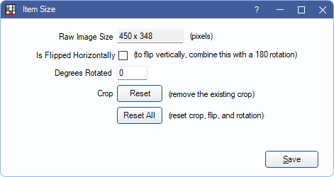

Image Size
View image size details or rotate images from the Item Size window.
In the Imaging Module, select an image. In the toolbar, click Size/Rotation.
If an image within a mount was selected, see Item Size and Rotation on Mount below.
- Raw Image Size: Displays the image size in pixels.
- Is Flipped Horizontally: Check to flip the image horizontally.
- Degrees Rotated: Rotate the image by any number of degrees.
- Crop Reset: Only available if an image has been cropped. Click to remove a crop from the image.
- Reset All: Only available if an image has been edited. Click to reset an image to its original size and orientation.
Click Save to exit the window and keep changes.
Item Size and Rotation on Mount
Select an image in a Mount and click Size/Rotation to open the Item Size and Rotation on Mount window.

These settings only affect the selected item on a Mount.
- Raw Image Size: Displays the raw image size in pixels.
- Mount Item Size: Displays the size of the mount item that this image is within. For radiographs, this is typically the same as the raw image size.
- Is flipped Horizontally: Check this box to flip the image horizontally.
- Degrees Rotated: Rotate the image by any number of degrees.
- Zoom Fit: Zoom level relative to a perfect fit in the mount item.
- Zoom Orig: Cannot be changed. Shows zoom level relative to original image.
- 100% Pix: Click to set a zoom level that causes the image to be 100% pixel match.
- Fit: Click to set the default zoom level where the image fits within the mount item with possible bands on the sides or top/bottom.
- Expand Fill: Click to set a zoom level that completely fills the mount item and crops out any extra on the sides or top/bottom.
Click Save to exit the window and maintain changes.